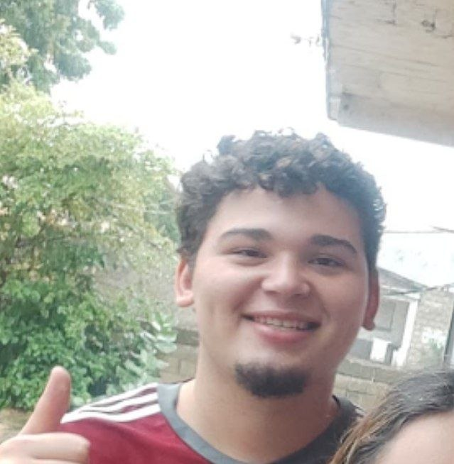
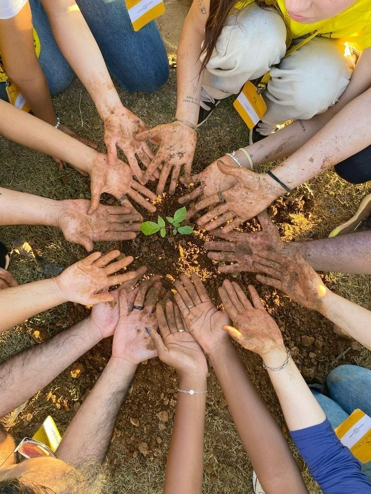
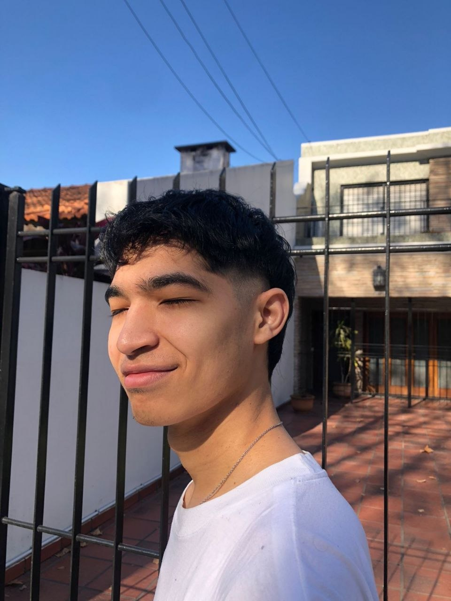

José Rodríguez
Desarrollador Web

Tecnología con propósito
Estudiantes y colaboradores comprometidos con una iniciativa socio-tecnológica para informar, conectar y acompañar a la comunidad.
Equipo fundador
Construimos esta plataforma con una visión de colaboración, educación ambiental y participación comunitaria.

Desarrollador Web

Desarrollador Web
Desarrolladora Web
Desarrollador Web
Contacto del equipo
Si representas a una comunidad u organización y deseas proponer una colaboración tecnológica, este espacio te orienta sobre cómo contactar al equipo.
El número de WhatsApp del equipo desarrollador aún está pendiente de confirmación y autorización para publicación. No se reciben mensajes ni reportes desde esta página. Para documentar una situación, utiliza el borrador local; para colaboración comunitaria, consulta la página de contacto.
Contacto pendiente de autorización; no se ha publicado un número.
Memoria e identidad
Una primera aproximación a la identidad de Campeche. Los relatos y datos históricos deben revisarse con fuentes y testimonios locales.
Una interpretación extendida relaciona el topónimo Campeche con voces mayas. La historia local y las fuentes consultadas pueden ayudar a enriquecer esta referencia.
Los recuerdos sobre el uso de los terrenos y las actividades productivas forman parte de la memoria que los habitantes pueden documentar.
El crecimiento de la comunidad y sus espacios de convivencia pueden reconstruirse con testimonios, fotografías y archivos locales.